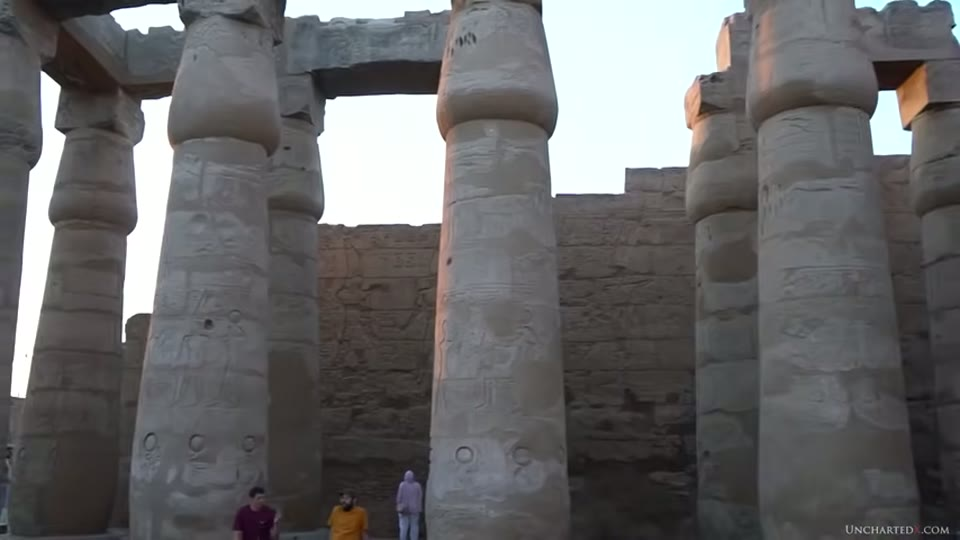
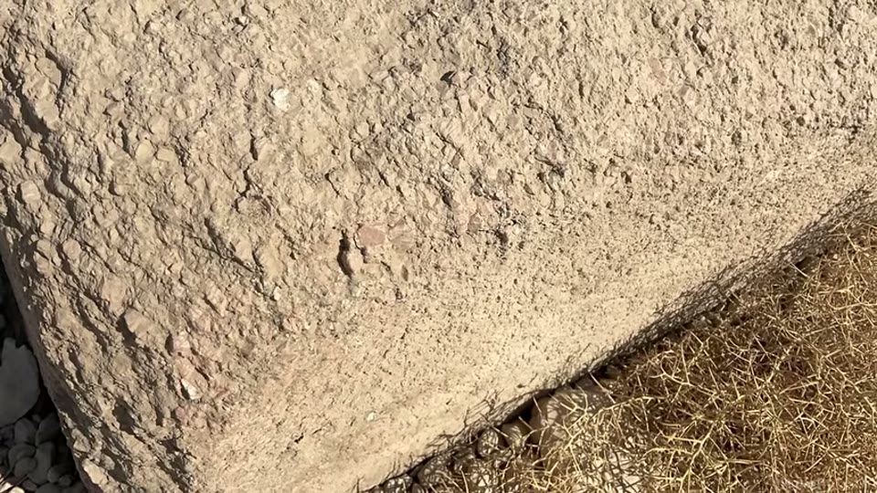
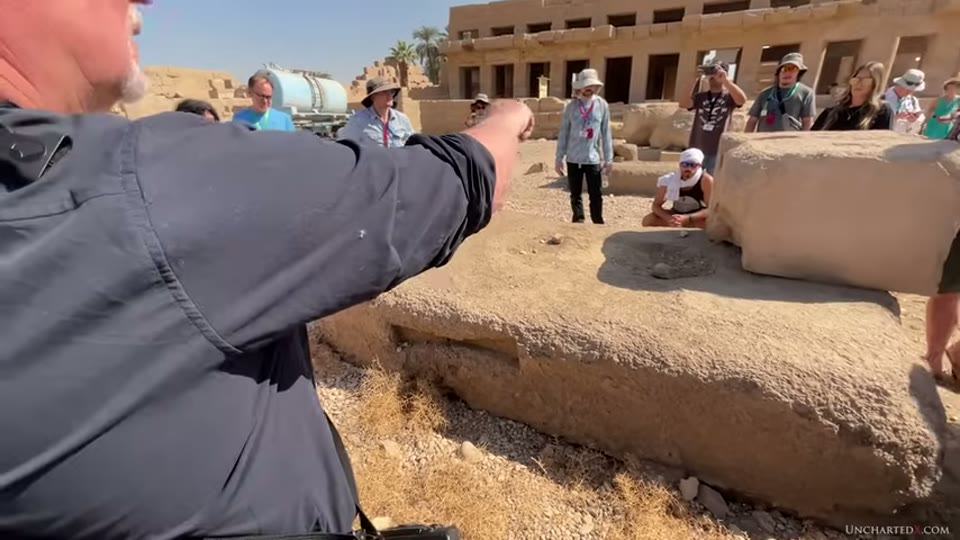
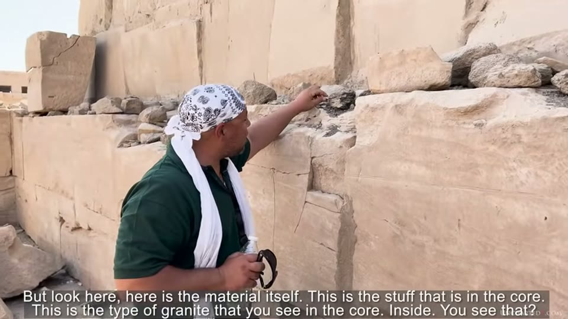
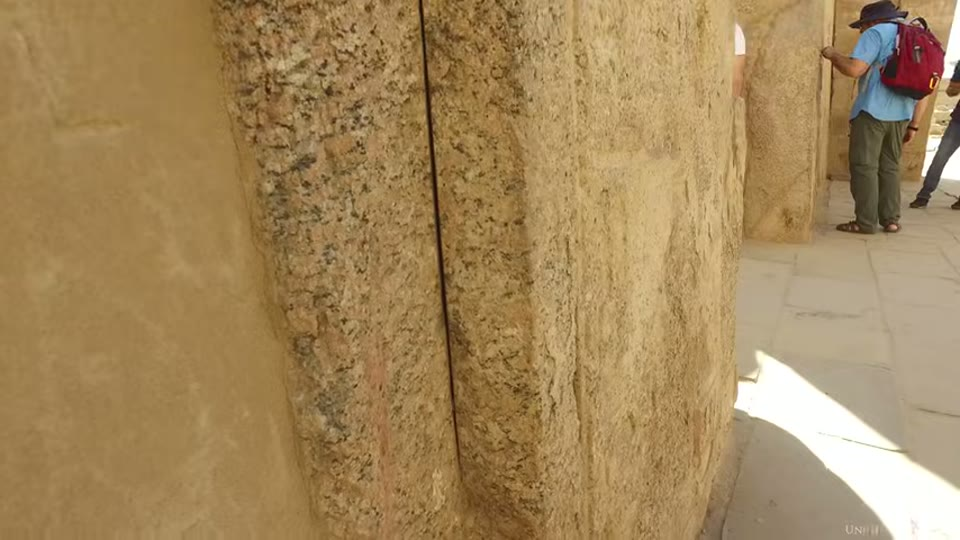
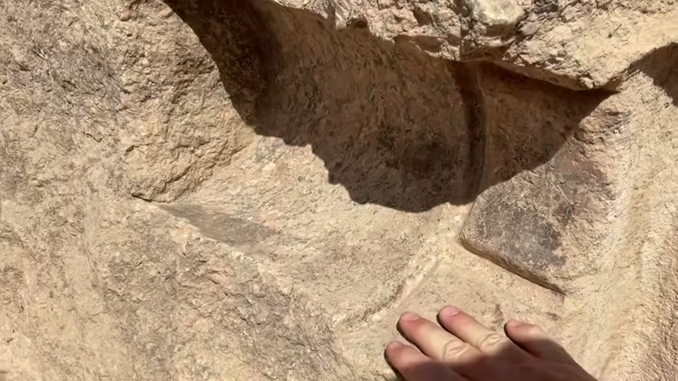
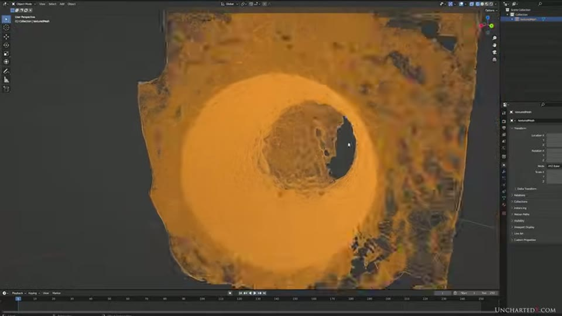
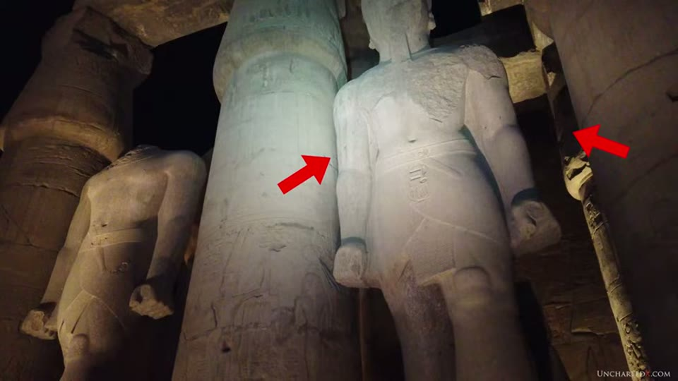

UnchartedX
MASSIVE Tube Drills, Overcuts, and Melted Granite at Karnak and Luxor Temples!
Ben · 67 min · watch on YouTube · summarised 2026-09-30
The longest video in the machining group and the broadest. Where the others narrow to one object or one figure, this one walks two enormous sites and picks out what Ben thinks belongs to a different industry from the temple around it.
The frame is stated at the start 00:44–01:55. Karnak and Luxor are dated by the orthodox account to 3,000–3,500 years old, built mostly between the 12th and 20th dynasties and attributed heavily to Ramesses II on the strength of his name being carved into them. Ben's objection to that method is one he has made before — "the problems with the he who wrote on it must have built it approach" — and he notes that even orthodox history accepts Ramesses usurped older and superior pieces.
The granite core inside a sandstone temple
09:57–18:10. The structural claim of the whole video: both temples have what he calls a granite core — central structures and artifacts in very hard stone, in places carrying machining marks — and around that core the mass of the building, the pylons and the hypostyle halls, is sandstone, which is far softer, easier to work and locally sourced. The granite had to come from Aswan, over 100 miles away.
He is explicit that the sandstone work is not being disparaged: the great halls are "in my opinion, unquestionably spectacular achievements by the dynastic civilizations of the Middle and New Kingdom."
The columns carry the argument. Just inside the first pylon at Karnak there is an unfinished sandstone column showing how they were made: blocks piled up, then shaved down to the final form. Against that he sets the single-piece monolithic granite columns still standing in a central structure at Luxor, and reads the sandstone ones as imitations — "although they're larger, these sandstone columns are, at least to my eye, obvious imitations of the amazing and older monolithic works of granite."

The material the bulk of both temples is built from.
His supporting distribution argument: sandstone columns of this kind are restricted to New Kingdom work, while single-piece granite columns run back to the oldest sites — Saqqara, Giza, the Cairo and British Museums, reused in the mosques of Islamic Cairo, a forest of them at Tanis, and the flared end at the Temple of Bastet that he calls the best he has seen. Those columns are examined in the precision entry.
He also corrects a claim made about him 17:25–18:10, and it is worth recording because it is a rare instance of the presenter narrowing his own position on camera: he says other channels have claimed he thinks the Roman columns of the Pantheon are Egyptian. His position is that the granite is from Aswan but "these columns were shaped by the Romans", and that they are imprecise and tapered where the Egyptian examples are flared and precisely made.
On the high-relief glyphs at Karnak he concedes the point 18:35–22:12. The lotus and palm carvings on the square granite pillars are remarkable, but the hieroglyphs above them are "still the result of hand tools and chisels", and he explains why the high relief is not evidence of anything more: the carving is inset into the surface, so all that was needed was a flat face and the removal of the negative space around the glyph. His summary: "so far as I've seen, there is nothing in any of these high-quality writings… that precludes them from being achieved with flint hand tools." He calls the carving of hieroglyphs a high art form of the New Kingdom.
A deeper layer, and recycling in the Old Kingdom
22:12–26:27. In a corner of the Great Hall at Karnak, floor tiles have been lifted to show what is underneath: the base of a column that is not sandstone like everything around it, but white calcite or alabaster. More of the same bases are near the obelisk, and Ben says they are not coordinated with the present hypostyle hall.

That an older column base of a different stone lies below the present floor.
The material is the clue as he presents it: white calcite bases were often paired with single-piece granite columns, and were in use from the earliest times.
To show how early the reuse begins, he cuts to footage from another of his videos: an Old Kingdom tomb at Giza excavated by Professor Selim Hassan, where round alabaster column bases have been converted into offering tables. The guide's point is made on camera and is checkable: one is a perfect circle, the next has had its circle cut away to make room for a depiction of the priest and his name. "Here we have conclusive evidence that shows that stone was being recycled since the Old Kingdom time." Ben's question from it: "just how old might these be if they're already being quarried and recycled in the Old Kingdom?"
The eroded granite, and the geologist
26:27–30:50. Towards the back of Karnak lie several rose granite blocks so severely eroded that "they almost look like unfinished raw granite" — originally flat with square corners, now rounded, granular and crumbling. Bow-tie joinery cuts are still visible in them.
This is the section where the video does something the rest of the group does not: it puts a qualified geologist in front of the evidence and lets him talk. Chuck Kinzer was on the trip, and what he says is more careful than the setup:
- Why corners go first — a corner has the most surface area for its volume, "so that very tiny corner is easy to erode, and then it goes and goes. Eventually this will end up round."
- Why granite crumbles unevenly — "this pink is an orthoclase feldspar… it will degrade faster than the quartz that's in this. Granite has five different minerals at certain percentages."
- The long-weathering reading — "that thing was shaped a long time ago. And to do that, I mean, that's not going to happen in 10,000 years."
- And two other mechanisms, which he raises himself — "This thing was probably wet for a while, or there was a fire around it… just like you heat something up and cool it down, it can break." And later: "this to me looks like this has been soaking in water a little bit too."
He rules one thing out on the spot: acidic groundwater, "because there's so much limestone around here… this is an alkaline soil." And he flags the limits of what he is offering: "that's as much of an expert as I can be in 20 minutes."


Granite worn round and crumbling, and the geologist brought to it.
The crumbling granodiorite
30:50–36:35. In a normally off-limits alcove in the granitic core, dark granodiorite has, in Ben's words, "undergone some sort of transformation." The intact pieces are cracked as if from pressure inside the stone; broken pieces show an outer couple of inches still solid with the interior degenerated and crumbling.
Yousef Awyan carries this section, and the video prints his words as burned-in subtitles, which is the only reliable record of them. What he adds:
- He has shown the stone to Robert Schoch on one of his tours and to a chemistry teacher he names, and "they both said, I don't know." He reports the latter as saying recently: "the more I investigate, the more it becomes confusing."
- The direction is what makes it strange. Both men agree stone crumbling from the surface inward is ordinary and they have seen it in mountains. "Here it's the opposite. The core is crumbling and the surface is…" — "Inside out. Exactly."
- And the sequence it implies: "which shows as well that this transformation happened after the stone was shaped."

Stone whose interior has decayed while its surface stayed solid.
Ben states his own position plainly twice. He has no explanation. And he rejects the geopolymer reading before anyone offers it: "It's not geopolymer… it doesn't matter how many times I explain the evidence or legitimate reasons that geopolymer is a silly theory, particularly when it comes to granite or other igneous rock." His only comparison is to basalt blocks at Abusir that were once cased in limestone and are now crumbling, and a suspicion — offered as one — that the combination of granite, limestone, basalt and calcite on the oldest sites had a functional purpose he has not identified.
Overcuts
36:35–41:45. On a section of obelisk in the granitic core there are several narrow overcuts. The shape is the argument: they "begin shallow, they get deeper, and then they become shallow again", which is the profile a circular blade leaves as it enters and exits. At the lower end of one he reads a reset of the tool — a second cut slightly off the line of the first.

A narrow cut running past where it needed to stop.
More overcuts are in the white calcite of the reconstructed chapels near the entrance, including in the internal corners, though he notes that parts of some cuts are now inaccessible because modern concrete was added during the reconstruction.
The calcite prompts a digression with a testable claim in it: white calcite comes from the centre of ancient natural springs, and the further out from the source you quarry, the more impurities give you yellow or brown calcite. He lists where large amounts of it turn up — 60 to 70 tons of machined calcite removed from beneath the Step Pyramid and bulldozed into a berm in modern times; the channel blocks under the floor tiles at Saqqara; the floor and building blocks of the Valley Temple at Giza.
The nine-inch hole
41:45–51:19. His favourite piece at Karnak: a tube drill hole around 9 inches in diameter in a granite block that has since been split down the axis of the hole, leaving a half-cylinder open to view. He reads the splitting as later quarrying — the hole is the weak line, and wedge and chisel work follows it.

One of the largest tube drill holes on the site, opened by a later split.
The argument against copper-and-sand for a hole this size has three parts:
1. Starting it. He points out that in Mark Lehner and Denys Stocks' televised experiment "they had to use a power tool to get the circular hole started in the granite so that the copper tube could be seated… although they certainly don't show you that part in the film." How a nine-inch circle is started by rubbing sand is, he says, an open question nobody has addressed. 2. The wall texture. Grooves and striations can be felt on the hole's walls, where grinding leaves a polished surface with, at most, barely perceptible horizontal scratches — and he credits that characterisation to Dunn's experiments, Stocks' experiments, and to the sceptics' own attempts to test Petrie's claim. 3. The thinness of the overrun. The tool left a slight overrun only a couple of millimetres thick, and a copper grinding tube must be thick: it needs surface area to carry the abrasive and mass because the copper wears away at a rate similar to the stone. "If you tried to use a very thin copper tool, it would just bend, or it would wear away without any perceptible effect to the granite."
He also notes a carved circular groove with straight intersections around the top of the hole, and offers a use for it as speculation: a pivot for enormous doors with the straight cuts acting as a locking position. He immediately marks the weakness — "that idea would necessitate the existence of other holes of similar sizes, but I haven't been able to find them."
On core 7 he declares the matter closed 44:44–46:05, which is the strongest verdict in the entry: the spiral groove has been validated by Dunn and by the Petrie Museum with hands-on experiments and analysis of a latex mould, and confirmed by others with research appointments. "As far as I'm concerned, the case on core number seven is closed." That dispute is held in full as the tube drills entry and its addendum, which records both sides.
And what he says he is doing about the one-object problem 46:05–48:03: high-resolution photogrammetric scans of drill holes were made on a recent trip and are shown in a 3D application; the Petrie Museum was closed for renovation when he was in England in July 2023; and there are plans to return with a structured-light scanner to scan core 7, vases, and other drill cores in the collection which "at least to the eye seem to display similar spiral groove markings." That scanning programme is what the precision vases entry reports the results of.

That drill holes are now being scanned rather than only photographed.
The statues
51:19–59:24. The standing granite statues at Karnak and Luxor he puts in the 300–400 ton range. In the boneyard at Karnak there is part of a chest and neck from a much larger one, and workers are reassembling an arm and shoulder from a single piece of composite quartzite — a straight arm, so probably a standing figure, from a block he estimates would have exceeded 1,000 tons. The quarry for the quartzite is not known and was not Aswan.
The hand is the two-industries argument in one object. The thumbnail and cuticle are finely carved; the cartouche cut into the end of the scroll the hand holds is, in his reading, "obviously the work of primitive hand chisels."

Two levels of workmanship on one statue.
The same segment was filmed for and first used in the colossal statues entry a year earlier, where the hand is also the candidate for the largest statue.
Yousef Awyan puts the craftsman's version of it on camera: the stone is conglomerate quartzite with flint nodules in it, "between seven and 8.5 on the Mohs scale", and "the question that I will always ask as a stone carver — why didn't you use the same tools and polishing that they used here to finish the work around the inscriptions, if they both were made at the same time?" He grants the obvious objection himself — "some academics can say that the inscriptions were done by a different person than the carving. I can agree with that, no problem" — and answers it: the two workers would still have had similar tools.
Ben extends the answer 54:37–55:20: the scribe paints or draws the glyphs and the mason carves them, so if it were all one job it would be the same mason with the same tools.
He adds a materials point: quartzite contains flint nodules, and flint is the stone used to carve granite — "yet, running your hand over the smooth surface of the stone, there's no perceivable difference in finish."
Two more objects. A broken statue at Karnak made from dolerite — the stone the pounding balls are made from, which prompts "one might wonder, what was used to carve the carver?" And the hedjet crowns in the courtyard at Luxor, which he invites the viewer to run a hand over: "there is no perceivable deviation or imperfection." The crowns are the objects Dunn's published symmetry figures analyse in the precision entry.
Shelley's Ozymandias is read out in full over the ruins.
The last observation, and it is a small one
60:10–61:28. In a courtyard at Luxor, several large standing statues sit among stacked sandstone columns. The spacing is uneven — the statues are not centred between the columns, at two separate statues. The editor marks it on screen with red arrows.

That the statues are not centred between the columns around them.
The question he puts is conditional and he leaves it that way: "Could this sandstone infrastructure have been built up around the existing statues and columns? I don't see any reason to rule out this possibility." His closing position is that the New Kingdom work was done "to encompass, claim, perhaps even to restore a far older structure" — and that none of that takes anything away from what the Middle and New Kingdoms achieved.
What you can check yourself
- The granite core against the sandstone shell. Which parts of Karnak and Luxor are granite and which sandstone is visible to anyone walking the sites, and the unfinished sandstone column inside the first pylon shows how the sandstone ones were built.
- The alabaster column base below the floor is exposed and roped off in the Great Hall.
- The offering tables at Giza. One base is a full circle, the next has had its circle cut away for an inscription. Both are photographable, and Selim Hassan's excavation is published.
- The eroded granite blocks are in an open area at the back of Karnak, with bow-tie joinery cuts in them.
- The overcut profile. Whether a cut starts shallow, deepens and shallows again is a thing anyone can look at and photograph.
- The nine-inch hole is split open along its axis, so the wall and its grooves are exposed.
- The thumbnail and the cartouche on the quartzite hand are on the same object in the Karnak boneyard.
- The column spacing at Luxor. Whether the statues are centred is a measurement anyone can take with a tape or judge from a photograph taken square on.
- Core 7 is UC 16036 in the Petrie Museum, and both the original claim and the analyses of it are published.
- Abu Ghurab's obelisk pedestal is a real platform with published dimensions.
What the video does not settle
- The geologist's own account contains more than one mechanism, and the narration uses one of them. Chuck Kinzer offers long weathering, wetting, fire and thermal cycling, and says he has been an expert on this for twenty minutes. The line the video builds on — that this would not happen in 10,000 years — is stated in the same conversation as the alternatives, and no sample, test or measurement follows from any of it.
- The crumbling granodiorite is unexplained by everyone in the video, including the two specialists named as having been asked. No analysis, section, chemistry or dating appears; what is offered is a description of the direction of decay.
- Nothing here is measured. The 9-inch hole, the couple-of-millimetres overrun, the 300–400 and 1,000-ton estimates and the erosion are all given by eye or by estimate; no rule, gauge or scale appears in any shot.
- The photogrammetric scans are shown, not analysed. They appear as textured meshes in a modelling application; the analysis is said to be forthcoming.
- The case on core 7 is declared closed rather than reopened. The counter-analyses are characterised as not credible and are not shown.
- The Lehner and Stocks claim is asserted from memory of a programme. That a power tool was used to start the hole and that it was cut from the film is stated; the programme is not shown and no source for the claim appears.
- The column-spacing observation has no measurement behind it and no plan of the courtyard; it is an eye judgement with arrows drawn on the frame.
- The alabaster bases are not dated. That they predate the hypostyle hall is argued from material and from their position below the floor, not from an excavation report.
- The dolerite statue, the hedjets and the quartzite arm are not identified by accession or excavation number, and no museum label appears for any of them.
- The functional-stone suspicion is explicitly a suspicion, and the "limited testing" he refers to is not repeated or quantified here.
Names and terms heard rather than read
A 2023 upload with a properly punctuated caption track, so this is the cleanest of the group. Six reconstructions:
| written here | as the captions give it |
|---|---|
| Yousef Awyan | "Youssef", "Yousef Awyan" (both forms appear) |
| Denys Stocks | "Dennis Stocks" |
| Ramesses II | "Ramesses II", "Ramses" |
| Osireion | "Osireion", "the Osirian shaft" |
| granodiorite | "grano-diorite" |
| Selim Hassan | "Selim Hassan" (given) |
One name was not recovered. The chemistry teacher Yousef Awyan says he consulted about the granodiorite is rendered "our teacher Georgia Susan Moore in the chemist school", and is left out of the body rather than guessed at. Chuck Kinzer and Robert Schoch are spoken clearly but neither is captioned on screen, so the identification of the man speaking on camera about the granite rests on the narration alone.
The guest speech is burned into the picture as subtitles, as on three other videos from this channel, and the quotations from Yousef Awyan in this entry are taken from the picture.